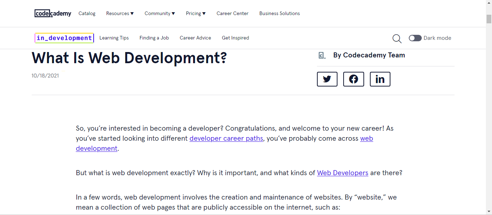

Research Review
Career Foundry
The website delves into the fundamental notion of web development, including its essential concepts and
relevance in today's digital world. It explains how web development includes the building, maintenance,
and upgrading of websites and online applications that cater to a variety of features and user
requirements. The article stresses the interdisciplinary aspect of web development, which includes
skills such as coding, design, and problem-solving that are necessary for creating seamless online
experiences. Furthermore, it emphasizes the dynamic nature of web development, which is always
developing to meet emerging technology and user expectations, highlighting its critical role in
influencing the internet ecosystem.
Furthermore, the website explains the many jobs and career options in web development, which range from
front-end development focusing on user interface design to back-end development dealing with server-side
logic and database administration. It highlights the necessity of obtaining appropriate technical
skills, such as fluency in programming languages like HTML, CSS, and JavaScript, as well as soft skills
like communication and teamwork, which are essential for success in this dynamic business. Furthermore,
the article emphasizes the availability of tools and educational opportunities for ambitious web
developers, allowing them to begin on a fulfilling career path in an ever-changing area. Overall, the
website provides a complete guide to comprehending the complexities of web creation and its critical
role in changing the digital landscape.
This article is extremely valuable since it gives a thorough introduction of the discipline, outlining
its key principles, relevance, and career options. The article is a helpful resource for anyone hoping
to work in web development since it explores the interdisciplinary nature of the profession and details
the necessary skills, such as coding languages and problem-solving talents. Furthermore, it emphasizes
the dynamic nature of web development, highlighting its ongoing progress and adaption to emerging
technologies, providing readers with the information they need to navigate and flourish in this
fast-paced area. Overall, this article serves as an instructive reference for both newcomers and
seasoned experts, providing insights into the complexities of web development and inspiring individuals
to seek fulfilling careers in the sector.
HubSpot
The website examines the necessity and process of website construction, with a focus on enterprises in
the digital era. It describes the many steps of website creation, from planning and design to coding and
launching, emphasizing the importance of user experience (UX) and search engine optimization (SEO) in
establishing a strong online presence. The paper highlights the need of responsive design, mobile
optimization, and frequent updates to stay up with changing consumer preferences and technical
improvements.
Furthermore, the blog emphasizes the importance of websites as effective marketing tools for driving
traffic, generating leads, and increasing brand trust. It promotes a strategic approach to website
creation, which aligns design and content with corporate goals and target audience demands. The
article's practical advice and insights seek to provide readers with the knowledge and tools they need
to begin on successful website development projects, eventually contributing to the growth and success
of their enterprises in the digital space.
The blog offers great insights and practical advice on website building, making it beneficial for both
people and organizations looking to start or expand their online presence. The material provides a full
overview of the website building process, including vital areas such as planning, design, coding, and
optimization, and is suitable for both novices and seasoned experts. Furthermore, the website's focus on
user experience (UX), search engine optimization (SEO), and marketing tactics emphasizes its importance
in assisting users in creating successful and powerful websites that generate traffic, engage audiences,
and achieve corporate goals. Overall, the website is an excellent resource for anybody wishing to
improve their grasp of website building and apply it to reach their digital objectives.
Coursera
The website presents an incisive summary of a web developer's position and duties, emphasizing the wide
range of skills essential for success in this area. It highlights the significance of knowing both
front-end and back-end development, as well as proficiency in programming languages and frameworks
like HTML, CSS, JavaScript, and Python. The article also discusses the need to be up-to-date on the
newest industry trends and technology, such as responsive design and progressive web apps, in order to
develop interesting and usable websites. It also discusses the many job routes open to web developers,
such as freelance possibilities and positions at tech corporations.
Furthermore, the website examines the many learning methods and tools accessible to prospective web
developers, notably through online platforms such as Coursera. It recommends a variety of courses and
specializations that address critical subjects in web development, from fundamental HTML and CSS to more
sophisticated topics such as full-stack development and web design concepts. The essay underlines the
importance of hands-on learning and practical projects in reinforcing knowledge and developing a solid
portfolio. Overall, it is a complete handbook for anybody interested in pursuing a career in web
development, providing great insights and tools to assist them navigate this dynamic and ever-changing
sector.
This article is useful for anybody interested in pursuing a career in web development since it gives a
thorough overview of the subject, including the requisite skills, technology, and career routes. It
provides insights into the wide skill set needed for success, highlighting the significance of knowing
both front-end and back-end development, as well as remaining current on industry trends and technology.
Furthermore, the article acts as a practical reference, recommending various learning routes and
resources accessible on online platforms such as Coursera, allowing ambitious web developers to access
appropriate courses and specialties to improve their abilities and build a solid portfolio. Overall,
this article is an excellent resource for anybody looking to get into web programming.
Codecadamy
The website investigates the principles of web development, providing a thorough explanation of what it
comprises. It divides web development into two major categories: front-end development and back-end
development. Front-end development is the process of creating the visual and interactive elements of a
website with which visitors engage directly, utilizing languages such as HTML, CSS, and JavaScript.
Back-end development, on the other hand, concentrates on a website's behind-the-scenes functionality,
such as database management and server-side operations, and is usually done in languages such as Python,
Ruby, or PHP. The essay underlines the need of learning front-end and back-end development in order to
construct completely functional and visually appealing websites.
The website investigates the principles of web development, providing a thorough explanation of what it
comprises. It divides web development into two major categories: front-end development and back-end
development. Front-end development is the process of creating the visual and interactive elements of a
website with which visitors engage directly, utilizing languages such as HTML, CSS, and JavaScript.
Back-end development, on the other hand, concentrates on a website's behind-the-scenes functionality,
such as database management and server-side operations, and is usually done in languages such as Python,
Ruby, or PHP. The essay underlines the need of learning front-end and back-end development in order to
construct completely functional and visually appealing websites.
This website is a wonderful resource for anybody interested in learning the foundations of web
development. The website provides a complete overview of web development by breaking it down into two
major components: front-end and back-end development, as well as insights into the important skills and
tools necessary in each area. It also highlights the need of constant learning and problem-solving
abilities, which are critical for success in the sector. With suggestions for further resources and
communities such as Codecademy, the website not only teaches but also gives opportunities for users to
improve their abilities and keep current with the newest technologies and trends, making it an
invaluable resource for aspiring web developers.
